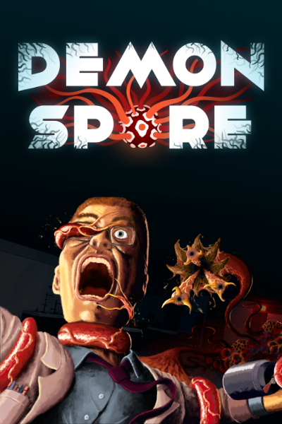
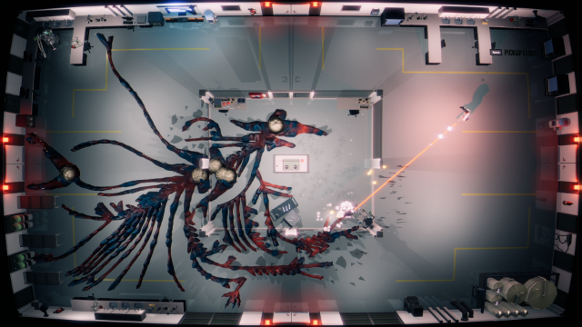

PRESS KIT
|  |
DEVELOPEREd KayRELEASE DATE2023PLATFORMSPCStay tuned for announcements on other platforms PRICETBDLINKSCompany WebsiteDeveloper Twitter Steam Store Page Youtube Channel Download Marketing Assets |
How would you describe the game in one sentence?
Demon Spore is an intense action rogue-like inspired by 80s Monster movies where you have to blast your way through tentacle hell as a failed lab experiment gives birth to a rapidly growing viral horror.

What’s the most unique thing about the game?
You are up against a deadly organism that constantly spreads and mutates into different forms. Cut off one tentacle and it will grow three more. Your only chance of survival is by forming a desperate escape plan through quick thinking, choosing the best route through the lab and using the lab environment to your advantage.
Where does the game take place?
The game takes place inside a genetic research laboratory that specialises in the development of lab-produced food. But as you play you’ll start to discover the lab has some darker secrets. When the creature comes to life, the facility is locked down in an attempt to stop the spread, making your task of escaping even more difficult.
How would you describe the feel of the game?
Exciting, tense, stressful, mysterious, scary, unpredictable… but with a little spark of humour.
Who is making this game?
Hi! I’m Ed. I’ve been making games for 20 years, mostly as a designer. I’ve worked on a lot of action games like Bulletstorm, Timeshift, Counterspy etc. as well some horror games like Call of Cthulhu: Dark Corners of the Earth. I was also working on a Star Wars game at Lucasarts until Disney bought the company and decided to cancel all internal projects.
This was a sad day, made extra sad by the fact it had happened to me many times before at other companies. I was tired of being at the mercy of big corporations so I decided to leave AAA console development and make my way into indie games. A few years later I launched mountain-swinging goat-grappling action game Hang Line and somehow it got 5 million downloads.
This paved the way for me to tackle something a little more ambitious...
Where did the idea of Demon Spore come from?
It all started on a boat in Thailand. I was at a game jam where developers get together to sail and make games (yes I know this sound ridiculous but it’s actually real! It's called Pirate Jam). The theme of the jam was 'chaos' and this made me think of Chaos Theory and using equations to generate complex graphical patterns like fractals and Game of Life. I thought it would be interesting to try and make a game where the visuals were entirely generated by equations.
Since this was a game jam, there was really limited time so the simplest way I could think to turn something like that into gameplay was by making it a retro twin stick shooter where you could chop off a branch to destroy everything connected to it. This is really the core of the game that everything is built on top of.
For over a year the whole game was just 2D coloured triangles. But the more I experimented with the branching pattern code, adding smoothing and more variance, the more it started to look like some kind of creature. Well, more specifically a slime mould.
Several biology videos later I came across a fungus called “Devil’s Fingers”. At this point my love of 80s monster movies persuaded me to start exploring a more horror direction and see if I could turn those triangles into tentacles. Then finally, Demon Spore was born.
What are the main features?
I will write this list when it’s more clearly defined, but this list on the main page gives a basic overview.
Do you have any marketing assets?
Why of course! You can download all the marketing art assets in this convenient zip file.
How do I get in touch?
Here's a few options:Sign up to my Newsletter
Send me a message
Follow me on twitter